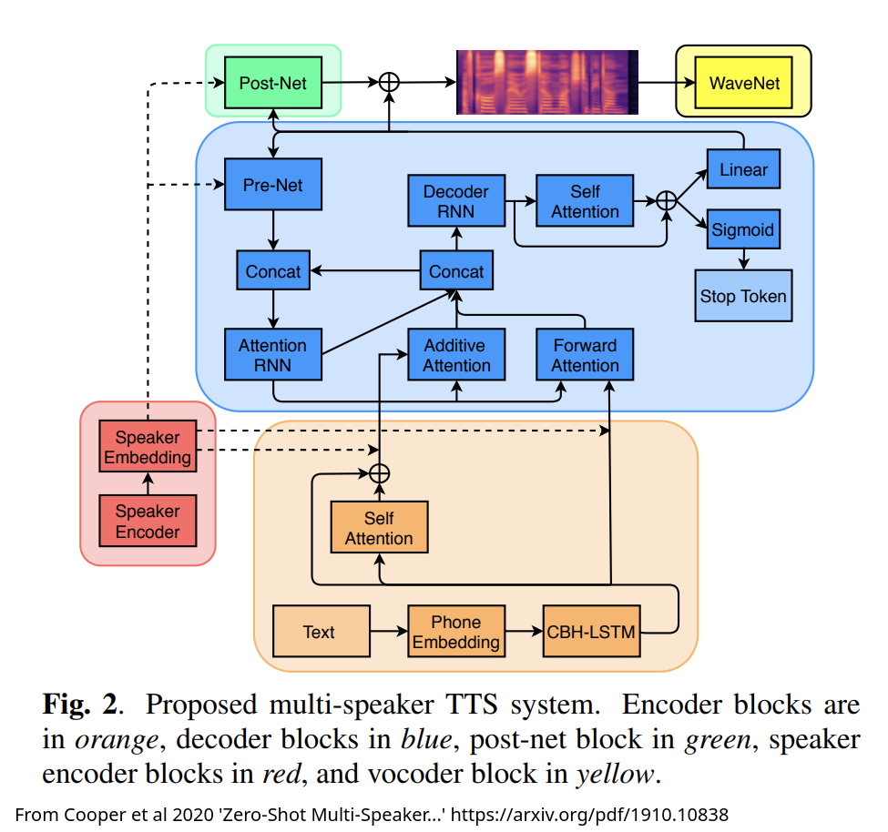

What do voices tell us?
Encoding Identity and Emotion
The Neural Elements of Style
How well does this work?
Remaining TTS Questions
Voices carry social information
Voices carry identity information
Voices carry linguistic information
Voices carry emotional information
Information about gender presentation and sexuality
Information about racial identity (for better and for worse)
Information about our social identity, class, and background
Voices also indicate roles (e.g. newscaster, pilot, therapist voice)
Our voice helps to ‘authenticate’ to trusted friends and family
Consistency of voice helps us recognize humans
We can estimate things like age and height from voices
Some familiar voices bring comfort and ease
We can intuit a person’s language background and other languages
We can guess a person’s dialect(s)
We can use a voice to adapt our perceptions
Voices can be ‘angry’ or ‘sad’ or ‘calm’ or ‘quiet’
Tones of voice can affect somebody’s emotional state
It is very possible to say the right thing incorrectly
‘Calming’ or ‘soft’ voices are a thing
The story of determining voice identity isn’t based on a few features
Current theories involve a high dimensional voice space and ‘distance from the average speaker’
The nature of this is a bit vague, but the key is that it’s not ‘just’ any few features
Our own Ben Lang has done work on our perception of Sexual Orientation, Gender Identity, and Gender Expression
Turns out that people will tend to cluster people into social categories
Meaningful features include f0, formants, fricative moments, voicing type, and more
There’s still not ‘one simple cue’
There’s some evidence that linguistic content, as well as seeing faces, affects human recognition ability
Cultural factors play a large role in emotion perception
Anger and fear are best recognized, but even still, it’s complicated.
This would be difficult to manually build a representation which captures voice or emotion well
Parameterization for ‘angry’ or ‘Will Styler’ is not straightforward
It sure is a shame that nobody’s developed a sort of machine learning algorithm which is exceedingly good at learning high-dimensional embeddings from diverse data…
We can ‘recognize’ neural voices
We can detect emotion (or improper emotion, lack of emotion) in TTS speech
These carry social information
But how do we do this purposefully?
You can build a model from the ground up using any voice you’d like
If all your training data are from a bored Bostonian, you’ll end up with a bored Bostonian TTS voice
This is very expensive, though, and doesn’t scale well at all
Train on one voice, and then do more training on data only from a second voice
This is not so different from training an ASR model on a few languages, and then giving it some (e.g.) Tira data to modify how it does the task.
This is easier than making a new model, and makes quite accurate voices
This allows you to fit all elements of the model to the voice in question
You’ll train text analysis, prosody/duration modeling, phonemes, all to match that particular human
If you have the budget and the amount of data from the speaker needed, there’s no reason not to just create a full model!
If a model knows how to say ‘penguin’ already, why re-train just to have another person say it?
How much really differs prosodically across two dialects?
Why build a new model for text analysis differ if you just want somebody who sounds a bit different?
Most of the learned task doesn’t change, even when the voice does!
This is often a dual-encoder architecture
One encoder creates a ‘style embedding’
The other encoder captures linguistic ‘content’ information
Both encoders’ output is combined to help generate the output


There are many ways to do multi-speaker TTS!
… but this is a good, illustrative case!
Note that this is an example of the larger phenomenon of ‘Neural Style Transfer’
Pull MFCCs
Look at the overall variability in speech based on the Universal Background Model (UBM)
Use Factor Analysis to identify the relevant elements of variability
Now generate an ‘i-vector’ which models the person in the greater variability approach
Pull MFCCs for many, many speakers
Use a specialized Deep Neural Network to classify many speakers in a large training set
Now, find the speaker’s individual embedding in that space by looking across frames in an audio sample
This embedding is the ‘x-vector’, and has a bit more robustness and nuance
Loss for TTS systems is generally comparison with the expected, training data mel spectrogram of the sentence
When you’re taking a clip from a speaker and then making up different sentence, this doesn’t make sense.
You are minimizing the distance between two embeddings which represent voice similarity as distance
When the embedding is similar, the output should be identifiably similar to the input embedding
It doesn’t matter what characteristics in the signal make a voice sound like it does, this approach should force the TTS to be similar to that!
Part of the network does the classical TTS task
Another part processes the embedding and injects it into the input stream
The output should approximate both the content and the style!
The encoder for style takes the audio as input, and outputs a fixed-length x-vector (or equivalent)
The input linguistic content doesn’t matter, it just has to be enough frames to build a representative x-vector
This means that we don’t need a lot of data to ‘clone’ a voice
This is about voice, not language, so style transfer works across languages
The speaker is the same, it’s just the content that changes
More on this in a minute!
Instead of passing in new speakers, pass in x-vectors corresponding to new emotional states
Give labeled states, and then apply those labels
You may want more granularity, but this is workable!
Modern tools are quite frighteningly good at this
The ‘goodness’ of the tool varies as a function of how close the voice is to Standardized English

(Thanks to Winston Durand!)
(TacoTron2)
(ElevenLabs)
(Credit to Erick Amaro and Mia Khattar!)
(English)
(French)
(Spanish)
(Mandarin)
(Italian)
(Russian)
(Japanese)
It’s like sometimes mezclo un poco de español con my English, cuando me siento particularmente spicy, y tengo curiosidad to know cómo la TTS handles it.
Adenocarcinoma in Tubovillious Adenoma bona fide certiorari de jure collusion RICO ex post facto CVN AWACS Escapement Tourbillion Remontoir de Egalite
Many of the classical issues in TTS aren’t really issues anymore
We can do not just different voices, but specific voices
… and we can work across languages very effectively
Wow.
Where we are in 2024 vs. 2011 is wildly different
Deep Neural Networks have enabled possibilities that I couldn’t have imagined
We have much to improve, but less than I’d thought!
Voices carry lots of information, socially and linguistically
Encoding identity and social elements is not remotely straightforward, and uses many, many features
Neural style transfer separates content from style, and allows us to reproduce the same content with a different approach
It works really, shockingly well